CS184/284A Spring 2025 Homework 3 Write-Up
Link to webpage: cal-cs184-student.github.io/hw-webpages-d-wwwang/
Link to GitHub repository: github.com/cal-cs184-student/hw3-pathtracer-danielwang
Overview
In this homework, we built a physically-based path tracer from scratch. Starting from camera ray generation and primitive intersection, we then added BVH acceleration, direct lighting via hemisphere and importance sampling, full global illumination with recursive path tracing and Russian Roulette termination, and finally adaptive sampling to improve the performance of our path tracer.
The most interesting insight from this assignment was seeing how much visual information is carried by indirect light. Direct illumination renders look flat and artificially dark in shadowed regions, while even just one or two more bounces significantly transforms the image. The ceiling lights up, shadows soften, and colored walls bleed onto nearby surfaces just like how real light is. It was also interesting to see how straightforward Russian Roulette makes unbiased termination. Rather than cutting off paths at a fixed depth, paths are terminated randomly but scaled to compensate, and the result converges to the same answer without any systematic bias. The BVH acceleration was another interesting result, watching render times drop from over a hundred seconds to milliseconds made the \(O(\log n)\) runtime improvement much more visible.
Part 1: Ray Generation and Scene Intersection
Walk through the ray generation and primitive intersection parts of the rendering pipeline.
We begin with raytrace_pixel, generating ns_aa camera rays per pixel as samples.
For each sample, a random 2D offset within the pixel is taken from a uniform grid sampler, added to the
pixel's bottom left corner coordinates, and normalized using the images width and height.
From there, generate_ray converts the normalized coordinates to a world-space ray. We take the
field of view to map
the coordinates to those of the sensor plane and form the camera-space ray. Multiplying this ray with the
camera-to-world rotation matrix
returns the world-space direction. Finally, we can construct the ray using the camera position as the origin
and the world-space direction unit vector to normalize it.
This normalization allows us to directly represent the distance along the ray. The min and max ends of the
segment are bounded by the near and far clipping planes respectively.
Each generated ray is passed to est_radiance_global_illumination, which uses the BVH
to determine the nearest scene intersection. If no intersection occurs, we simply return black. Otherwise,
we return the surface normal as a color (normal_shading).
Explain the triangle intersection algorithm you implemented in your own words.
The implemented triangle intersection algorithm uses the Möller-Trumbore algorithm.
Since we can represent every point within a triangle as a barycentric combination of its vertices, we can
solve for the barycentric coordinates of the intersection point.
This is done via cross products and dot products of the triangle edges and the ray direction. Once this
system has been solved, we check if the intersection point is within the triangle as well as
whether or not t within the valid portion of the ray. If both of these conditions are met, then
we update the ray's max_t so future intersections tests ignore anything beyond this point.
In intersect (as opposed to previously described has_intersection) we also compute
the surface normal to produce smooth shading.
Show images with normal shading for a few small .dae files.
|
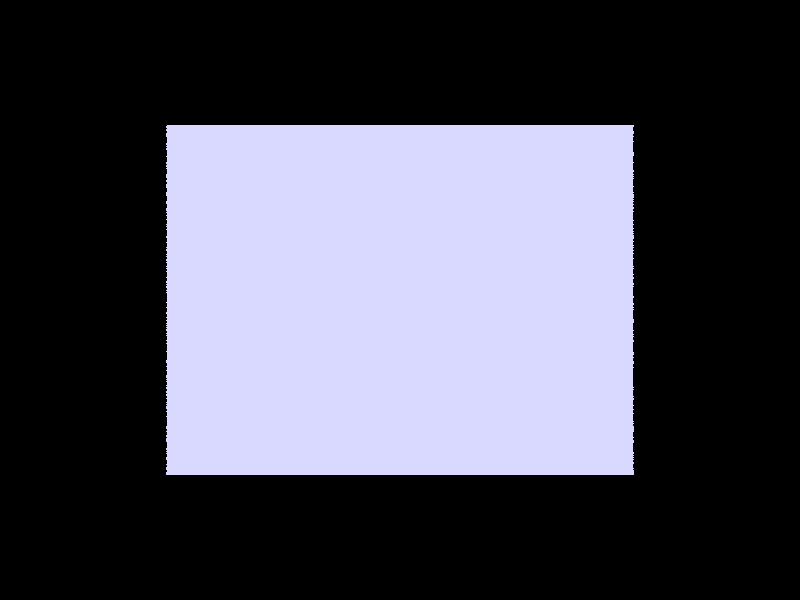 |
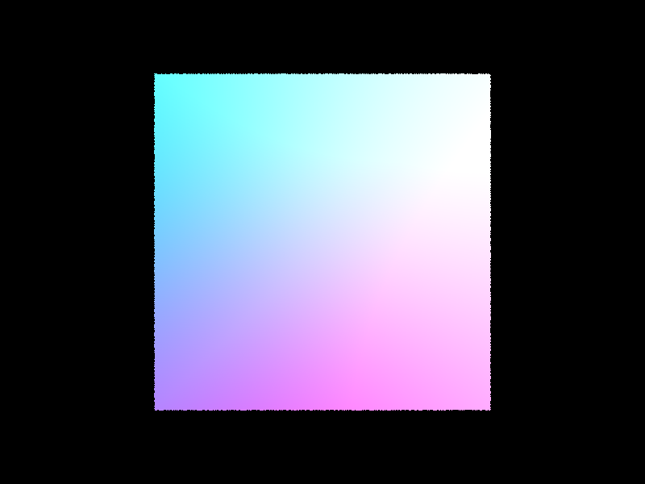 |
|
|

|
Part 2: Bounding Volume Hierarchy
Walk through your BVH construction algorithm. Explain the heuristic you chose for picking the splitting point.
construct_bvh builds the tree recursively. First, it computes a bounding box that contains
all primitives in the current range. If the number of primitives is at most max_leaf_size,
the node is turned into a leaf by storing the start and end iterators directly and
returning there.
Otherwise, the node is an interior node and we need to split the primitives into two groups. The
splitting heuristic is determined by finding the axis where the overall bounding box is longest
(largest extent in X, Y, or Z). Then, we split at the centroid of that bounding box along that axis.
Each primitive is assigned to the left group if its own bounding box centroid is below the split value,
and to the right group otherwise. This is done in-place with std::partition.
If the split is degenerate (all primitives land on one side), we fall back to a median split by count
to continue execution and avoid infinite recursion. The left and right children are then built by
recursively calling construct_bvh on each group.
Show images with normal shading for a few large .dae files that you can only render with BVH acceleration.
|
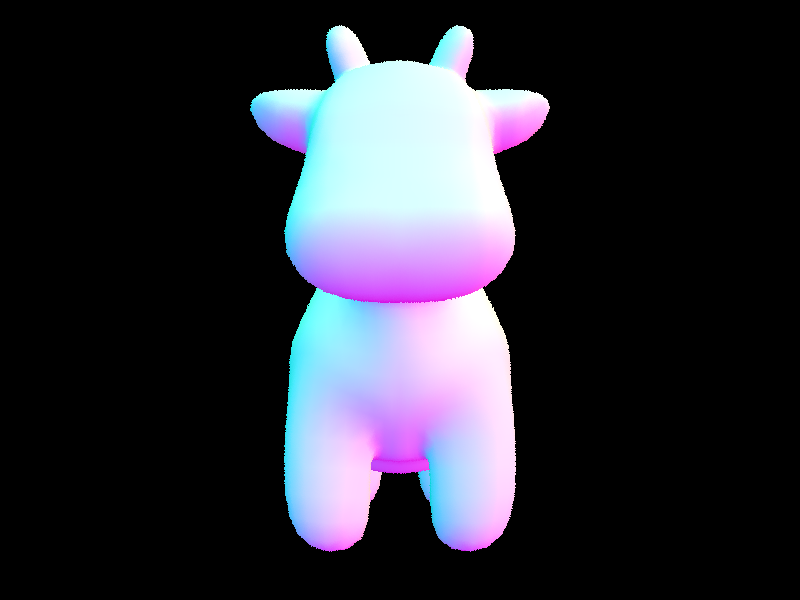 |
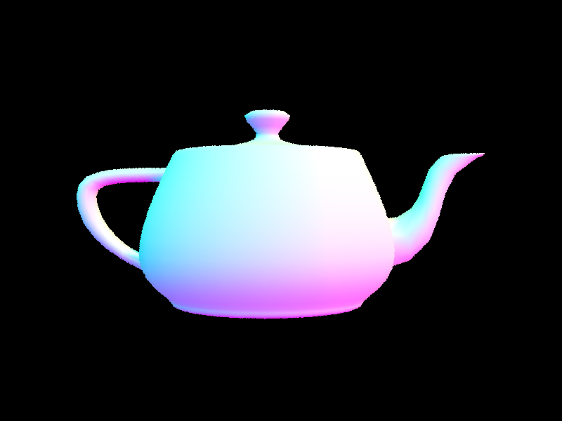 |
|
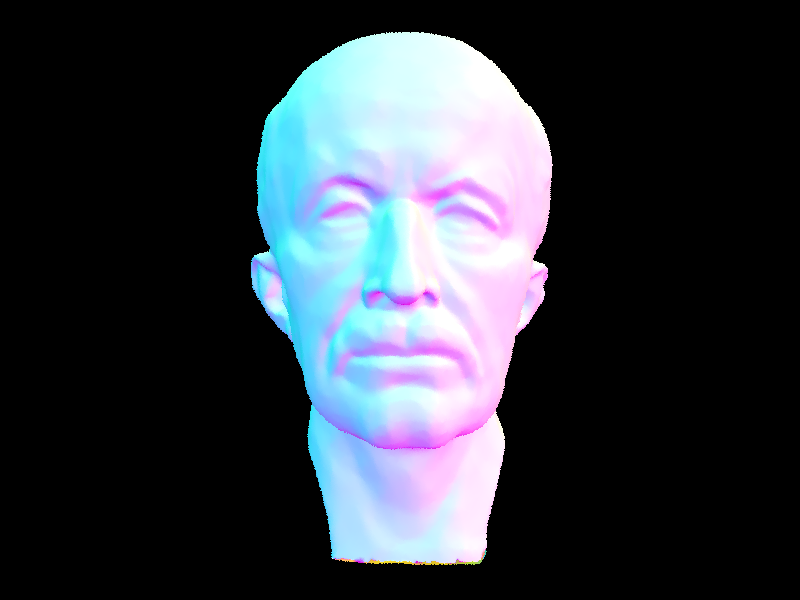 |
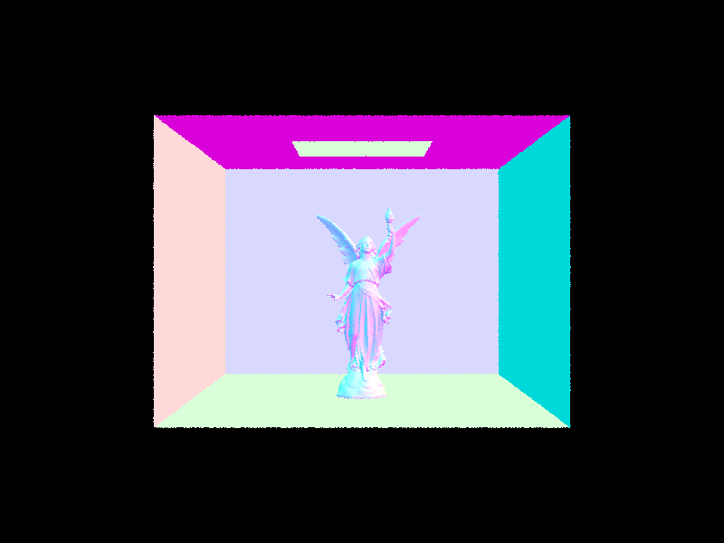 |
Compare rendering times on a few scenes with moderately complex geometries with and without BVH acceleration. Present your results in a one-paragraph analysis.
We compared rendering times on three scenes with and without BVH acceleration.
cow.dae (~5,000 triangles) took approximately 1.0088 seconds without BVH and
0.0254 seconds with BVH. maxplanck.dae (~50,000 triangles) took approximately
9.9163 seconds without BVH and 0.0279 seconds with BVH.
CBlucy.dae (~300,000 triangles) took approximately 102.9918 seconds without BVH and 0.0207
seconds
with BVH.
Without BVH, every ray must be tested against every primitive, costing \(O(n)\) time per intersection per
ray.
The BVH reduces this to \(O(\log n)\) on average by recursively "skipping" entire nodes when they are not
intersected by the ray. The speedup grows with scene complexity. For dense and complex scenes the
difference is significant, enabling scenes that would otherwise take minutes to
render to just a few seconds. These times were computed with 8 render threads and other settings set as
default.
Part 3: Direct Illumination
Walk through both implementations of the direct lighting function.
Both implementations estimate the direct lighting at a hit point by approximating the rendering equation as a Monte Carlo sum of \(f(\mathbf{w}_r \to \mathbf{w}_i) \cdot L(\mathbf{w}_i) \cdot \cos\theta\), divided by the sampling probability. They differ in how incoming directions are chosen.
estimate_direct_lighting_hemisphere samples directions uniformly across the hemisphere above
the hit point. For each sample, a shadow ray is cast in that direction. If it hits an emissive surface,
the contribution is accumulated using the BSDF, the emission, the cosine of the angle with the normal,
and the uniform hemisphere PDF of \(1 / 2\pi\). The result is averaged over all samples. Because most
random directions don't hit a light, this method converges slowly and produces noisy images at low
sample counts.
estimate_direct_lighting_importance instead samples directions directly toward each light in
the scene. For each light, sample_L returns a direction, distance, and PDF for a point on
the light. A shadow ray is cast toward the light with max_t set just short of the light
distance. If nothing blocks it, the light's contribution is accumulated. Point lights are sampled once
since all samples would be identical. Because every sample is aimed at a light source, this method
converges much faster and produces significantly less noise.
Show some images rendered with both implementations of the direct lighting function.
| Light Sampling | Uniform Hemisphere Sampling |
|---|---|
|
|
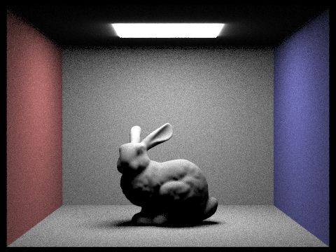 |
|
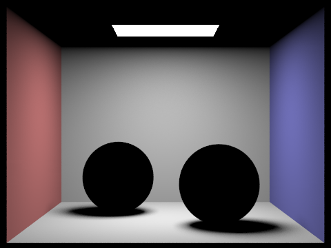 |
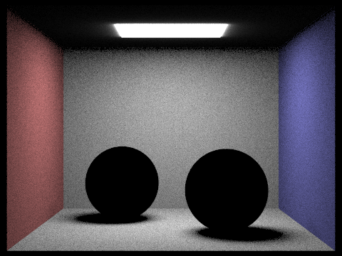 |
Focus on one particular scene with at least one area light and compare the noise levels in soft shadows when rendering with 1, 4, 16, and 64 light rays (the -l flag) with 1 sample per pixel using light sampling.
|
|
|
|
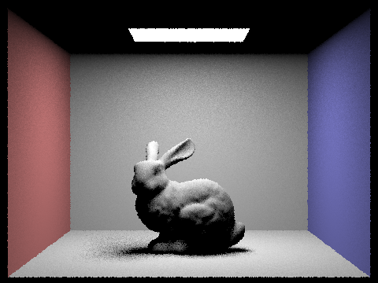 |
|
With only 1 light ray the soft shadow under the bunny is extremely noisy, as each pixel either fully receives or fully misses the light based on a single sample. At 4 rays the shadow boundary begins to form, however the soft shadow is still quite noisy. At 16 rays the soft shadow is mostly smooth with only minor noise remaining in the darkest parts of the shadow. By 64 rays the soft shadow is nearly free of noise and the transition from bright to dark regions is smooth. Soft shadow regions are noisy because each sampled ray either hits the light or doesn't, and the fraction of rays that reach the light changes gradually across the shadow edge. Therefore, more samples are needed to average this out into a smooth transition.
Compare the results between uniform hemisphere sampling and lighting sampling in a one-paragraph analysis.
Uniform hemisphere sampling produces significantly noisier results than importance sampling at the same sample count. With hemisphere sampling, most sampled directions do not point toward any light source, so the vast majority of samples contribute zero radiance. Only those that happen to hit an emissive surface count. This makes convergence slow and the output noisy, particularly in soft shadow regions. Light sampling bypasses this waste by always sampling toward the lights, so every non-occluded sample contributes. This creates a much cleaner image with the same number of samples. The tradeoff is that light sampling requires knowledge of where the lights are, whereas hemisphere sampling is more general. For soft shadows specifically, increasing the number of light samples with light sampling smooths out the shadow boundaries noticeably, while hemisphere sampling remains noisy even with more samples per pixel.
Part 4: Global Illumination
Walk through your implementation of the indirect lighting function.
at_least_one_bounce_radiance computes the full multi-bounce radiance at a hit point.
It begins by computing the direct (one-bounce) contribution via one_bounce_radiance.
If the ray's depth has reached 1, we return immediately with only the direct contribution.
Otherwise, we apply Russian Roulette with a continuation probability of 0.65. If the coin flip
fails, we terminate and return the direct contribution. If it succeeds, we sample the next bounce
direction by calling isect.bsdf->sample_f, which returns a cosine-weighted hemisphere
sample in object space along with the corresponding BSDF value and PDF. We transform the sampled
direction to world space, cast a new ray from the hit point with min_t = EPS_F and
depth = r.depth - 1, and check for intersection. If the bounce ray hits the scene,
we recursively call at_least_one_bounce_radiance on the new hit and accumulate the
result scaled by \(f \cdot \cos\theta \, / \, (\text{pdf} \cdot p_\text{rr})\) to account for
the BSDF, the geometry term, and the Russian Roulette correction. When isAccumBounces
is false, we replace rather than add the indirect contribution, isolating the specific bounce.
Show some images rendered with global (direct and indirect) illumination. Use 1024 samples per pixel.
|
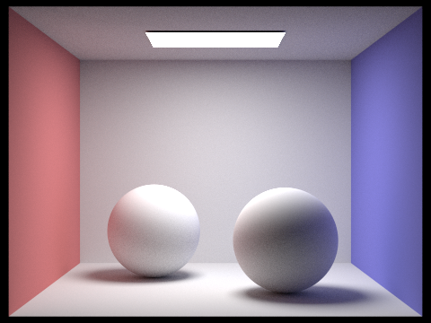 |
|
Pick one scene and compare rendered views first with only direct illumination, then only indirect illumination. Use 1024 samples per pixel.
|
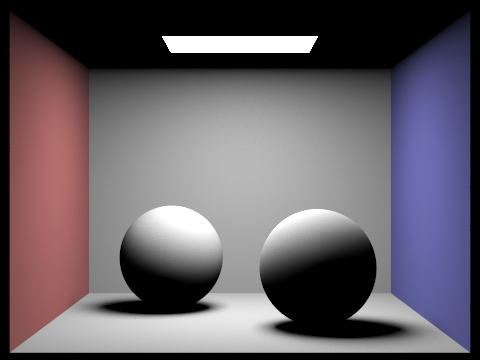 |
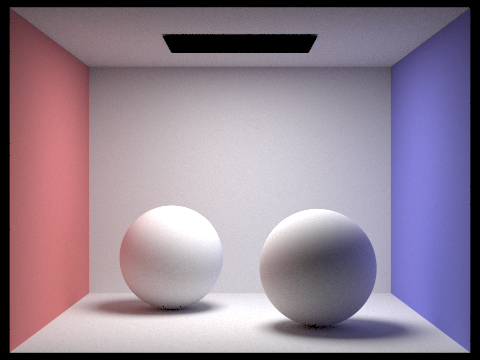 |
The direct illumination image shows the scene lit sharply from the area light above, with clear shadows
and bright surfaces that face the light directly. The ceiling is completely dark since no direct
ray from the camera hits a surface that faces the light. The indirect illumination image shows the
complementary contribution: the ceiling is now visible, shadows are softly filled in, and the
colored walls bleed onto the spheres and floor. The light source itself appears black
in the indirect-only image since zero_bounce_radiance is excluded. Together, the
two images sum to the full global illumination result.
For CBbunny.dae, render the mth bounce of light with max_ray_depth set to 0, 1, 2, 3, 4, and 5 with isAccumBounces=false. Explain what you see for the 2nd and 3rd bounce of light and how it contributes to the quality of the rendered image compared to rasterization.
|
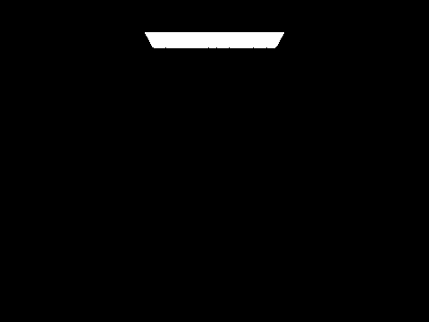 |
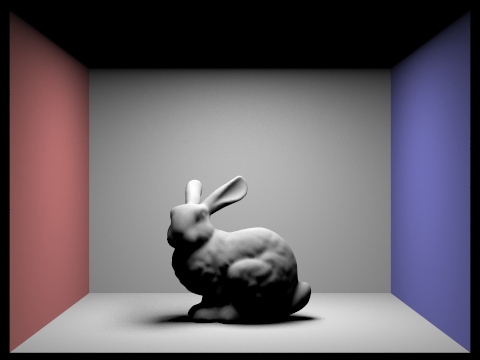 |
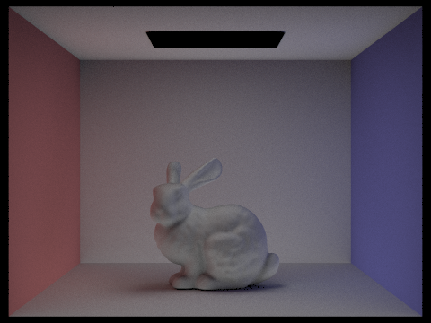 |
|
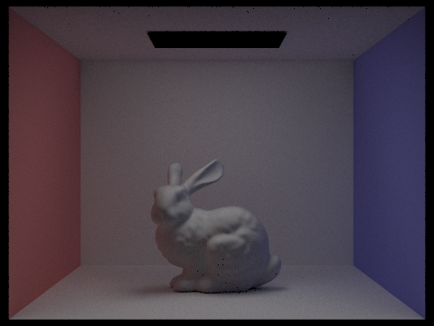 |
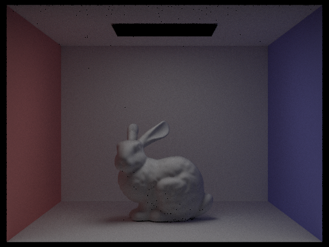 |
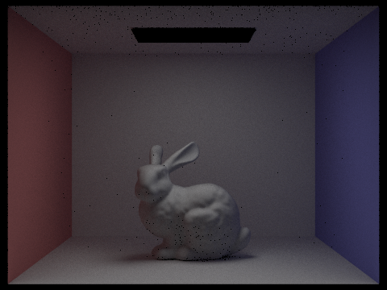 |
The 2nd bounce fills in areas that direct lighting cannot reach. This includes the underside of the bunny and the ceiling, which are dark with only one bounce. Light that has already bounced once off the floor or walls now reaches these shadowed regions, softening hard shadows and giving the scene a more natural appearance. The 3rd bounce contributes further to this shadow ambience, adding color bleeding from the colored walls into the bunny and floor. Both effects are impossible to achieve with rasterization without approximating indirect lighting, since rasterization has no mechanism to trace light across multiple surfaces.
Compare rendered views of accumulated and unaccumulated bounces for CBbunny.dae with max_ray_depth set to 0, 1, 2, 3, 4, and 5. Use 1024 samples per pixel.
| isAccumBounces=false | isAccumBounces=true |
|---|---|
|
|
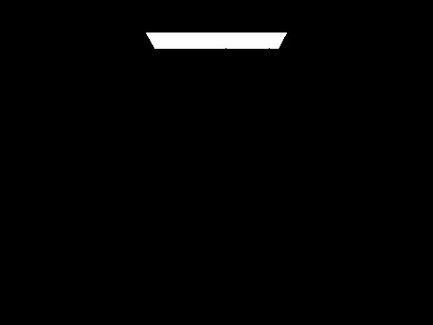 |
|
|
|
|
|
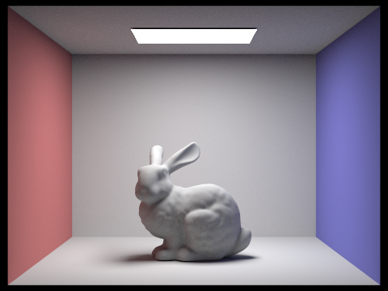 |
|
|
|
|
|
|
|
|
|
With isAccumBounces=false, each row shows only the light that arrived via exactly
that many bounces. At m=0 only the light source is visible; at m=1 we see direct lighting only.
From m=2 onward the images become progressively dimmer and more diffuse, since higher-order
bounces carry less energy. With isAccumBounces=true, each accumulated image is the
sum of all bounces up to m. The jump from m=1 to m=2 is visually the largest: the ceiling lights
up, shadows soften, and color bleeding from the walls becomes visible. Further increases (m=3, 4,
5) add only minor improvements as the contributions from higher bounce numbers become smaller in magnitude.
For CBbunny.dae, output the Russian Roulette rendering with max_ray_depth set to 0, 1, 2, 3, 4, and 100. Use 1024 samples per pixel.
|
|
|
|
|
|
|
|
Pick one scene and compare rendered views with various sample-per-pixel rates. Use 4 light rays.
|
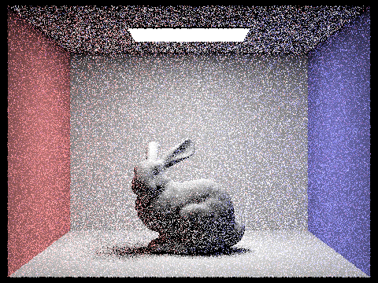 |
|
|
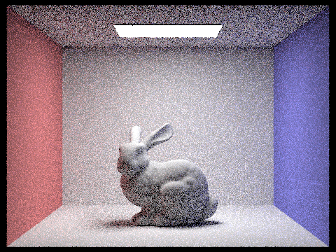 |
|
|
|
|
|
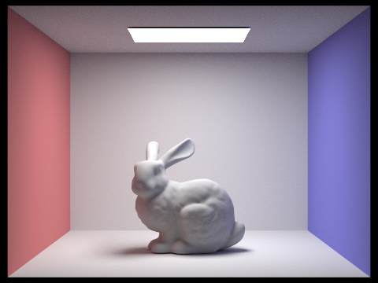 |
At 1 and 2 samples per pixel the image is extremely noisy. Individual pixels vary wildly since a single path sample is a very poor estimate of the full integral. As the sample count increases the noise steadily decreases. By 64 samples the image is recognizable and mostly smooth, with noise visible mainly in soft shadow regions and along the edges of the bunny. At 1024 samples the image is clean and converged. The relationship between noise and sample count follows the Monte Carlo convergence rate of \(O(1/\sqrt{n})\). Therefore, doubling samples reduces noise by roughly \(\sqrt{2}\), so improvements in noise require proportionally larger increases in sample count.
Part 5: Adaptive Sampling
Explain adaptive sampling. Walk through your implementation of the adaptive sampling.
Uniform sampling at a fixed high rate is wasteful because some pixels converge quickly as flat surfaces under steady lighting need few samples while others, like shadow boundaries and specular highlights, require many more. Adaptive sampling detects convergence per pixel and stops early once the estimate is stable, concentrating samples only where they are needed.
The convergence check uses a 95% confidence interval. After \(n\) samples we track two running
sums, \(s_1 = \sum x_k\) and \(s_2 = \sum x_k^2\), where \(x_k\) is the illuminance of the
\(k\)th sample via illum(). From these we compute the mean, variance, and
finally \(I = 1.96 \cdot \sigma / \sqrt{n}\).
If \(I \leq \texttt{maxTolerance} \cdot \mu\), the pixel is considered converged and sampling
stops. To avoid checking every sample, we only evaluate the condition every
samplesPerBatch samples. The actual sample count \(n\) is written to
sampleCountBuffer so the rate image correctly reflects early termination.
Pick two scenes and render them with at least 2048 samples per pixel. Show the sample rate image and noise-free result. Use 1 sample per light and at least 5 for max ray depth.
|
|
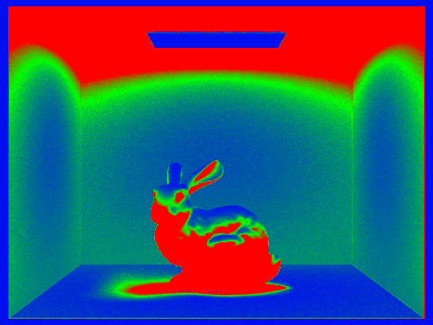 |
|
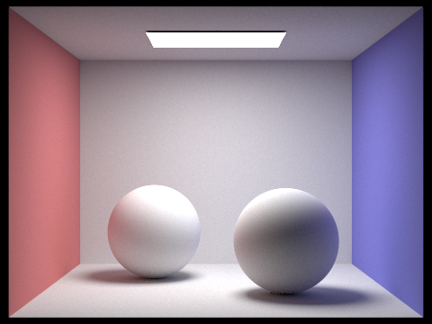 |
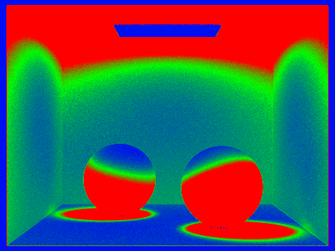 |